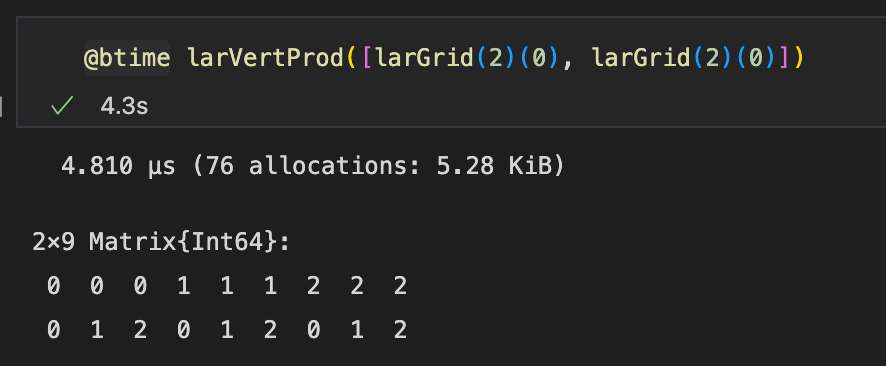
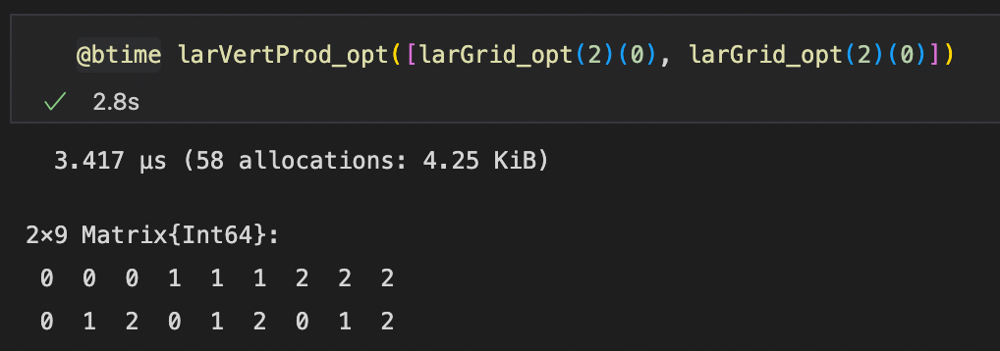

Studio esecutivo: LAR cuboids & simplices
Nel seguente documento verrà illustrato lo studio esecutivo per il progetto numero 1 - LAR cuboids & simplices, nel quale saranno descritte le ottimizzazioni fatte per i due file sorgenti largrid.jl e simplexn.jl presenti all'interno della libreria Lar (Linear Algebraic Rapresentation).
Autori
- Alessandro Dell'Oste: 502589
- Maurizio Brini: 505195
- Manuel Granchelli: 512406
Repo GitHub
https://github.com/adelloste/LinearAlgebraicRepresentation.jl
Indice
Obiettivo
L'obiettivo preliminare del seguente studio esecutivo è stato quello di analizzare i file sorgente e individuare le eventuali ottimizzazioni da poter effettuare all'interno del codice, facendo riferimento a quanto discusso in aula durante le lezioni e ai capitoli del libro consigliato Julia High Performace. In seguito, sono state testate alcune tecniche di ottimizzazione sui file sorgenti simplexn.jl e largrid.jl.
Analisi
L'analisi è partita dal file sorgente largrid.jl nel quale sono state analizzate inizialmente le funzioni più compatte, come ad esempio le funzioni: qn, grid_0, grid_1, nelle quali sono stati cambiati i tipi delle variabili e sono state rimosse le funzioni hcat e vcat. Il tipo Array{T,1} è stato rimpiazzato con il tipo Vector{T} mentre per array multidimensionali si è fatto ricorso al Matrix{T}. Il cambio di tipo, anche se in minima parte, ha migliorato le prestazioni delle funzioni. Un'altra ottimizzazione fatta nella fase iniziale dello studio è stata quella di utilizzare la funzione reduce insieme alla funzione vcat nelle parti di codice dove era presente solo la funzione vcat che può risultare poco efficiente quando lavora con una grande quantità di array. Anche in questo caso c'è stato un piccolo miglioramento di prestazioni, in quanto, l'utilizzo congiunto delle due funzioni comporta una minore allocazione di memoria.
Successivamente, sono state considerate le altre funzioni, nelle quali sono stati aggiornati, anche in questo caso, i tipi delle variabili ed in seguito, in alcune funzioni, sono state aggiunte le macro @inline, @inbound e @simd.
La macro @inline si è rivelata molto utile ed è stata utilizzata a livello di funzione. L'inlining è un'ottimizzazione manuale o effettuata dal compilatore che rimpiazza la chiamata di una funzione con il suo corpo eliminando così l'overhead dovuto alle chiamate di funzioni. Tuttavia ne consegue un aumento dell'allocazione di memoria (vengono create più copie della stessa funzione). Per questo motivo bisogna trovare un giusto equilibrio nell'utilizzo di questa tecnica. In Julia il complilatore esegue l'inline automaticamente basandosi su euristiche, tali euristiche consistono nella dimensione del corpo della funzione. Infatti, per le funzioni piccole la macro @inline non è necessaria e l'inline esxpansion viene eseguita automaticamente. @inline è stata utilizzata per funzioni che vengono richiamate all'interno di altre funzioni, come ad esempio la funzione larGridSkeleton che viene richiamata all'interno di cuboidGrid. @inline è stata aggiunta prima della definizione della funzione sulla stessa riga, come nel seguente esempio:
@inline function f_inline()
...
endLa macro @inbounds elimina il costo del bounds checking. Come ogni linguaggio dinamico moderno, Julia controlla che gli array non siano indicizzati al di fuori dei loro limiti. Ci sono operazioni extra per le letture e le scritture in un array che hanno un costo molto basso e di solito sono un buon compromesso per la sicurezza. Tuttavia, nelle situazioni in cui si è sicuri che i limiti dell'array non vengano mai oltrepassati è possibile rimuovere tali controlli con la macro in questione. Nel seguente caso la macro è stata utlizzata all'interno delle funzioni contenenti cicli for che accedono ad array. @inbounds è stata aggiunta prima di un ciclo for sulla stessa riga, come nel seguente esempio:
function f_inbounds(a)
@inbounds for i in 2:size(a, 1)
...
end
endL'ultima macro utilizzata nel seguente studio esecutivo è la macro @simd. Single Instruction, Multiple Data (SIMD) è un metodo per parallelizzare il calcolo all'interno della CPU, in base al quale una singola operazione viene eseguita su più elementi di dati contemporaneamente. In Julia, l'inserimento di questa macro (@simd) offre al compilatore la libertà di utilizzare le istruzioni SIMD per le operazioni all'interno del ciclo for davanti a cui viene posta. Non tutti i cicli giovano dell'utilizzo di questa tecnica, infatti, per poter essere utlizzata è necessario che il ciclo abbia alcune proprietà fondamentali tra cui l'indipendenza delle sue iterazioni, la disattivazione del bounds checking e l'assenza di chiamate di funzioni al suo interno. @simd è stata aggiunta prima di un ciclo for sulla stessa riga, come nel seguente esempio:
function f_simd(x)
@inbounds @simd for i = 1:length(x)
...
end
endInoltre, nel seguente studio esecutivo è stata testata anche la macro @threads. Tale macro permette di sfruttare le funzionalità dei thread, sequenze di computazioni che possono essere eseguite su un singolo core della CPU. In presenza di multipli core è quindi possibile eseguire più operazioni comtemporaneamente. Nei test effettuati la macro ha portato a peggioramenti dei tempi di esecuzione perché, come riporta il libro cosigliato Julia High Performace, è stata applicata su cicli for in cui sono presenti funzioni che modificano la stessa posizione in memoria. Per poter utilizzare @threads occorre importare il modulo Threads tramite il comando using Base.Threads. @threads è stata testata nel seguente modo, aggiungendola prima di un ciclo for sulla stessa riga:
function f_threads(x)
@threads for i in 1:nthreads()
a[threadid()] = threadid()
end
endInfine, oltre all'aggiunta di macro e al cambio del tipo delle variabili, alcune funzioni sono state partizionate in nuove funzioni che vengono chiamate all'interno delle funzioni originali. Un esempio è la funzione larModelProduct all'interno del file largrid.jl, nella quale una parte della funzione si occupa di creare i vertici e un'altra parte della creazione delle celle. Sono state create due funzioni (createVertices() e createCells()), che vengono richiamate all'interno della nuova funzione larModelProduct.
Le macro e le varie ottimizzazioni successivamente sono state implementate anche all'interno del file simplexn.jl.
Le modifiche al codice sono state eseguite inizialmente sui notebooks largrid.ipynb e simplexn.ipynb e successivamente sono stati modificati i due file sorgenti largrid.jl e simplexn.jl. Una volta eseguite le modifiche sono stati lanciati i test presenti all'interno del Repo GitHub nella cartella test per verificare il corretto funzionamento del codice. Nel successivo studio si cercherà di migliorare e ottimizzare ulteriormente il codice.
Test
Nella seguente sezione sono riportati alcuni dei test effettuati su alcune funzioni ottimizzate dei due file sorgenti. I test sono stati effettuati all'interno dei notebook utilizzando la macro @btime. Come si può osservare dall'output delle funzioni ottimizzate, in alcuni casi, le funzioni sono migliorate di molto (esempio: funzione grid - (Figura (2)))
grid
Output funzione:
 {#id-fig-1 .class width=80% margin=auto}
{#id-fig-1 .class width=80% margin=auto}
Output funzione ottimizzata:
 {#id-fig-2 .class width=80% margin=auto}
{#id-fig-2 .class width=80% margin=auto}
\pagebreak
grid_0
Output funzione:
 {#id-fig-3 .class width=80% margin=auto}
{#id-fig-3 .class width=80% margin=auto}
Output funzione ottimizzata:
{#id-fig-4 .class width=80% margin=auto}
\pagebreak
grid_1
Output funzione:
{#id-fig-5 .class width=80% margin=auto}
Output funzione ottimizzata:
{#id-fig-6 .class width=80% margin=auto}
\pagebreak
larVertProd
Output funzione:
{#id-fig-7 .class width=80% margin=auto}
Output funzione ottimizzata:
{#id-fig-8 .class width=80% margin=auto}
simplexGrid
Output funzione:
 {#id-fig-7 .class width=100% margin=auto}
{#id-fig-7 .class width=100% margin=auto}
\pagebreak
Output funzione ottimizzata:
{#id-fig-8 .class width=100% margin=auto}